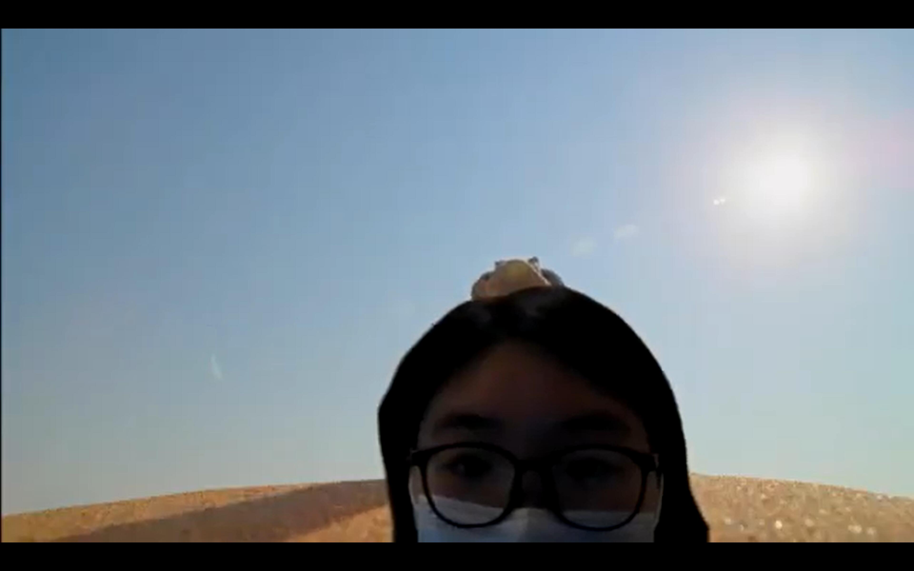
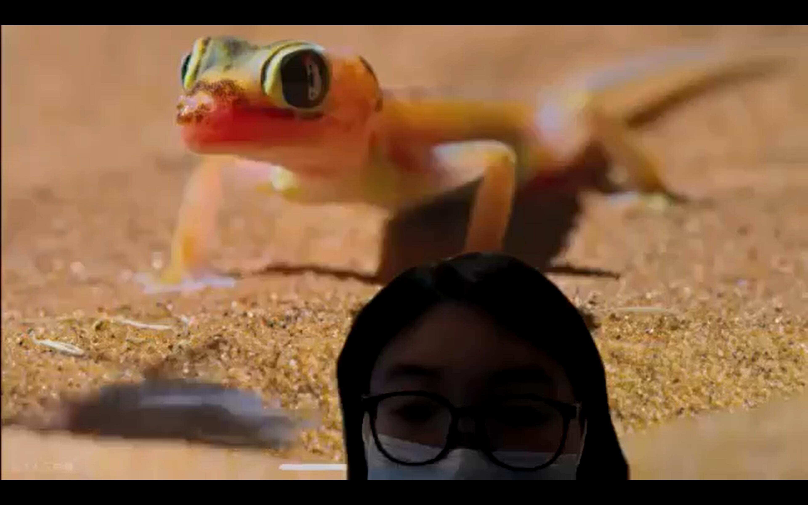
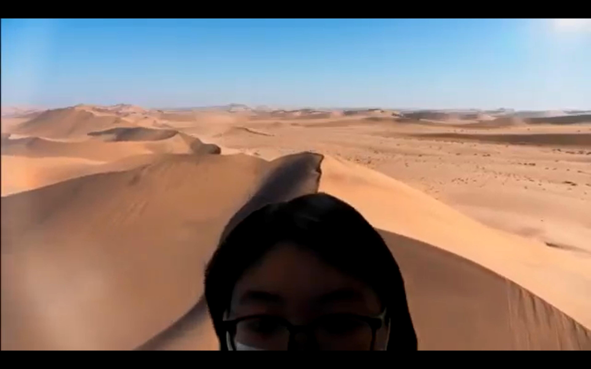

Green Screen
I chose to try and edit the "Dune" part of the documentary "Tiny World". I love documentaries like this about nature. In this documentary, the photographer zooms in and sees the world from the perspective of tiny animals, giving me a completely different spatial and sensory experience. I think when I use this video as the background of Zoom, I can integrate myself into the world of the tiny animals through the green background, and run through the gravel like them. When the camera is zoomed out, you will feel like you are huge, standing in the air and looking down at the world.



Click to see my vedio ヾ(✿ﾟ▽ﾟ)ノ